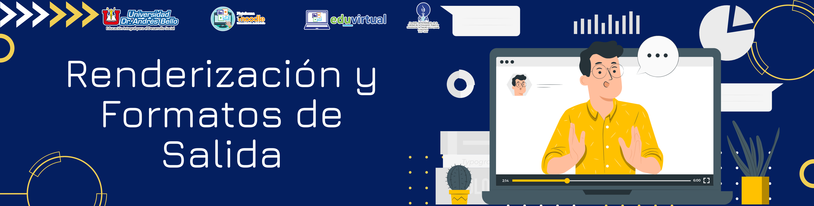
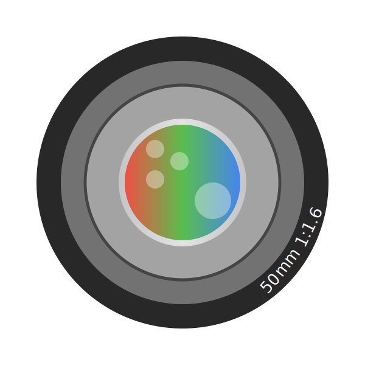

Renderización y Formatos de Salida, Ilusiones Ópticas, Preparación de Archivos PSD
1. Renderización y Formatos de Salida
Contenido
Renderización es un anglicismo para lo que vendría siendo representación gráfica, se usa mucho dentro del entorno informático para hacer referencia al proceso de producir imágenes fotorrealistas por medio de 2D o 3D.
Renderizar es el paso final de la edición tanto en imágenes como en video, pues conlleva el procesamiento digital, dicho de otra forma, es muy relevante dentro de la creación gráfica y la edición audiovisual, pues es la parte final y sin duda la más importante en la transformación de un simple archivo de trabajo en algo totalmente diferente.
Es que, al ser previamente un archivo en edición, este se guarda como archivo comprimido, liviano, que es fácil de editar, pero que no cuenta con todo su potencial para poder apreciar extensamente el producto final y por ende tampoco es posible ver todo su potencial.
En el video sucede lo mismo, para poder crearla, ya sea una secuencia de vídeo o una película, se editan por separado sus diferentes elementos, es decir, el sonido, la imagen, el texto y los gráficos que se combinan usando un programa de edición de vídeo.
 El programa, por ejemplo, Premiere coordina la combinación de estos elementos haciendo uso de un eje temporal, es decir, la línea de tiempo. Como último paso y para cerrar el proceso, se realiza la renderización, creando un archivo final donde todos los elementos se combinan y el archivo es de menor tamaño, ya no será posible poder editarlo, pero si se puede apreciar todos los cambios hechos y se podrá reproducir en la mayoría de dispositivos.
El programa, por ejemplo, Premiere coordina la combinación de estos elementos haciendo uso de un eje temporal, es decir, la línea de tiempo. Como último paso y para cerrar el proceso, se realiza la renderización, creando un archivo final donde todos los elementos se combinan y el archivo es de menor tamaño, ya no será posible poder editarlo, pero si se puede apreciar todos los cambios hechos y se podrá reproducir en la mayoría de dispositivos.
El factor a tomar en cuenta en la renderización es la exigencia de recurso de hardware durante el proceso, dado que la tarjeta de vídeo y la memoria RAM, así como el procesador se ven comprometidos altamente, pues es un proceso delicado y exigente.
Renderizar en Premiare
Para hacer una renderización previa en Premiere solamente se presiona Intro y procede a realizarlo.
Obra publicada con Licencia Creative Commons Reconocimiento Compartir igual 4.0